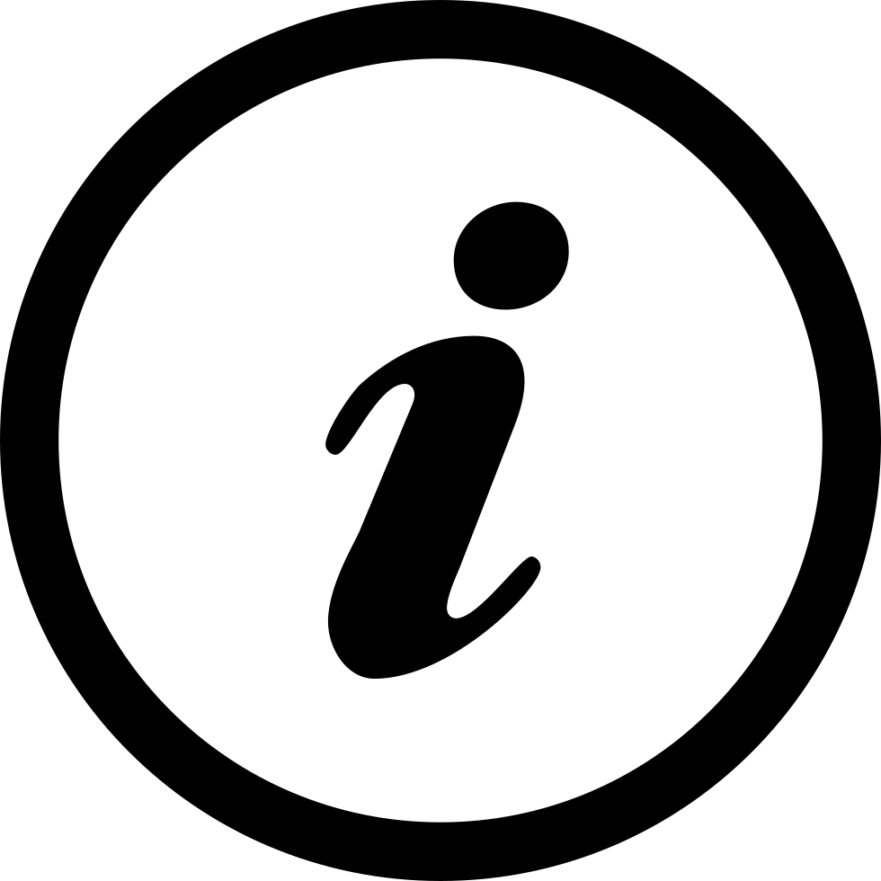

About the Criticism Archive
The Criticism Archive is and for many years will remain a work in progress, with new material being uploaded once or twice per year. At present the focus is on published literary criticism by British women writers of the “long” romantic period. Eventually, coverage can expand both chronologically and nationally, with the aspiration to provide a robust international archive of literary criticism by early women writers.
Although it has been available for some time via the Poetess Archive, this Romantic Circles peer-reviewed edition of the Criticism Archive was released on 20 June 2026. Information about earlier versions can be found in the TEI header for each document, available for download on each document's web page (click on the TEI Logo in the upper right-hand corner).
Editing Decisions
Copytext of published material relies on accurately representing the text as published. Few of the selections in this archive appeared in more than one edition, but where multiple versions exist, the earliest published version is emphasized, with aspirations to make later revisions available when time and labor permits. Currently, editing focuses on accessible teaching and research as well as coarse data mining. Thus, both person identifications and annotations are brief, while titles are simply encoded as such.
A few specific decisions are worth mentioning. Excepting a few basics (full stop, comma, semi-colon, colon, and hyphen) punctuation and characters outside those in the English language alphabet were encoded as HTML entities. Quotation marks indicating block quotes, running titles, compositor’s catchwords, and dashes within line breaks all have been silently eliminated, whereas pages as entities and unique page features such as signature and volume have been preserved. Spelling has not been regularized except that the long “s” has been silently modernized.
Encoding Decisions
Encoding conforms to TEI guidelines, allowing for representation of some features of the original text while still enabling expedient publication to extend text availability. The Criticism Archive Encoding Decisions manual provides details about TEI encoding.
Technical Decisions
The Criticism Archive began as a section of the Poetess Archive, currently being upgraded, but finally became a project worthy of notice in its own right and was submitted for peer review to Romantic Circles. Since Laura Mandell is General Editor of Poetess Archive and Technical Director for Romantic Circles, she has moved the Criticism Archive to RC's new home on the Cultural Heritage Archive supported by the College of Arts and Sciences and University Libraries at Texas A&M University. The Cultural Heritage Archives adheres to best practices for preservation, as detailed on the CHA requirements page (see the section on Code below). The Criticism Archive is among the first of the RC's digital resources to be moved to Texas A&M: our decisions and migration plans are described in "Romantic Circles and the Texas A&M Cultural Heritage Archive" (forthcoming).
The conversations between content and technical editors of any digital archive are often fascinating theoretically as we work through the problems and issues of trying to embody principles of textual criticism in virtual form. Here, we wish to make visible one set of decisions resulting from those conversations: the vocabularies that we created in order to categorize documents. In the upper left-hand corner of every page, you will see the genres and forms according to which we have categorized each document in this collection based upon the taxonomies that we built for the Poetess Archive (this project's original publication home). These categories may change. While Inchbald's British Theatre is currently designated as a collection, that may change to "nonce collection" or "sammelband," pending further research. And future work by the Cultural Heritage Archive Board may require us to use existing, widely used vocabularies, if not reconciling our own to them: in either case, changes may be necessary.
As Technical Editor, Laura Mandell welcomes correspondence about bugs, problems, and desired features: contact me about The Criticism Archive.
License
The Criticism Archive by Mary A. Waters is marked with a Creative Commons Zero License because placing scholarly data firmly in the public domain improves the quality of information circulating in the digital ecosystem. We request that scholars who use the archive attribute editorial work to Mary A. Waters and cite this digital edition: the funding for maintenance of this open access project depends largely upon citation-based evidence of scholarly usage. Sample citation:
Barbauld, Anna Letitia. "Life of Richardson." The Criticism Archive, ed. Mary A. Waters, tech. ed., Laura Mandell, Romantic Circles, 2026, https://cha.artsci.tamu.edu/CriticismArchive/HTML/BarbLifeRichardson1804.html
Citation information, the publisher and date as well as the link to cite in publications, is given at the bottom of every document.
Code

You can bulk download the TEI code for all documents in the Criticism Archive via this code download link, or download individual TEI files by clicking on the TEI Logo (pictured to the right) that you will find in the upper right-hand corner of each work in the collection.
This site adheres to Endings Project Principles: code for the site is available in the Texas A&M Cultural Heritage Repository community at Zenodo.org. The Culutral Heritage Archive (CHA), which offers nightly backups as well as storage in the Texas Data Repository requires WAVE accessibility scores of 9 or above, and CHA publishes the accessibility ratings for the Criticism Archive. CHA also requires peer review and published the Romantic Circles peer-review.
Editors
Mary A. Waters, editor of the Criticism Archive, is Melba V. Hughes Professor of English at Wichita State University. Specializing in literary criticism by eighteenth- and nineteenth-century British women writers, Dr. Waters is author of British Women Writers and the Profession of Literary Criticism, 1789-1832 and the editor of British Women Writers of the Romantic Period: An Anthology of their Literary Criticism. Her essays have appeared in venues such as Eighteenth-Century Studies, Nineteenth-Century Prose, Women's Writing, and collections from Ashgate and Cambridge University Press.
Laura Mandell, technical editor of the Criticism Archive, is is Professor of English and Presidential Impact Fellow at Texas A&M University where she founded, and for 12 years directed, the Center of Digital Humanities Research. She is the author of Breaking the Book: Print Humanities in the Digital Age (2015), Misogynous Economies: The Business of Literature in Eighteenth-Century Britain (1999), and numerous articles and chapters. She is Technical Director of Romantic Circles and of The Cultural Heritage Archive.
Contact Email
Contact Mary Waters and Laura Mandell about The Criticism Archive. Mary A. Waters, Laura Mandell, "About." The Criticism Archive, published by
Romantic Circles, 2026
Mary A. Waters, Laura Mandell, "About." The Criticism Archive, published by
Romantic Circles, 2026
 https://cha.artsci.tamu.edu/CriticismArchive/about.html
https://cha.artsci.tamu.edu/CriticismArchive/about.html